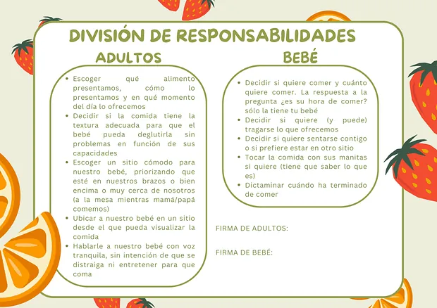

Alimentación complementaria y BLW sin miedo
Para empezar con los sólidos de tu peque con información actualizada y práctica: cuándo empezar, cómo ofrecer cada alimento y cómo hacerlo con seguridad, ya sea con BLW, con triturados o con un método mixto.

Este servicio es para ti si…
- Tu peque se acerca a los 6 meses y queréis empezar con buen pie.
- Os da miedo el atragantamiento.
- No sabéis qué alimentos ofrecer primero ni cómo prepararlos.
- Os llegan consejos contradictorios de familia, redes y foros.
- Queréis hacer BLW o un método mixto con seguridad.
Cómo funciona
- Antes de la sesión
Vuestras dudas
Me contáis cómo es vuestro peque y qué os preocupa, para dedicar la sesión a lo que de verdad necesitáis.
- Sesión · alrededor de 1 hora
Todo lo práctico
Señales de que está preparado, BLW, triturados o mixto, cómo cortar y preparar cada alimento según la edad, la diferencia entre arcada y atragantamiento, los alimentos que conviene esperar y cómo introducir los alérgenos.
- Después
Material para casa
Os lleváis la tabla de introducción de alimentos y las guías para tenerlo todo a mano en la cocina.
- Si lo necesitáis
Seguimiento
Si os surgen dudas cuando ya estéis en marcha, podemos tener otra consulta para resolverlas.
Los talleres grupales de BLW se organizan en farmacias, centros y asociaciones. Si te interesa uno, escríbeme.
Lo que te llevas a casa
Todo el material es propio y lo recibes en PDF para tenerlo siempre a mano. Estas son algunas muestras.



Cuánto cuesta
Pago por adelantado. Te explico cómo al reservar.
- Sesión de alimentación complementaria
- 55 €
- Seguimiento
- 45 €